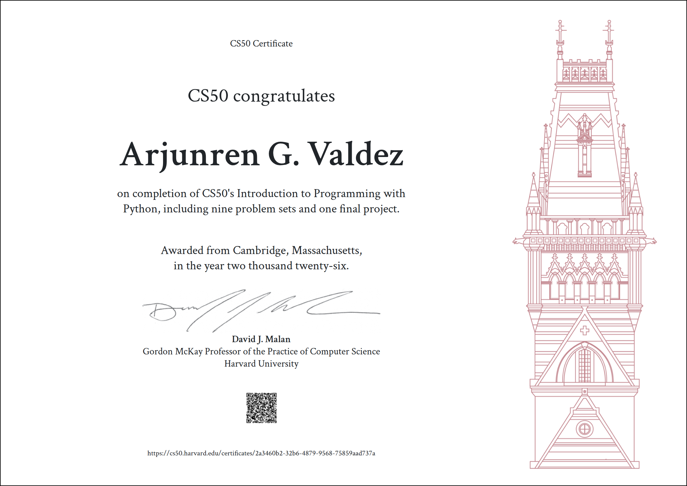
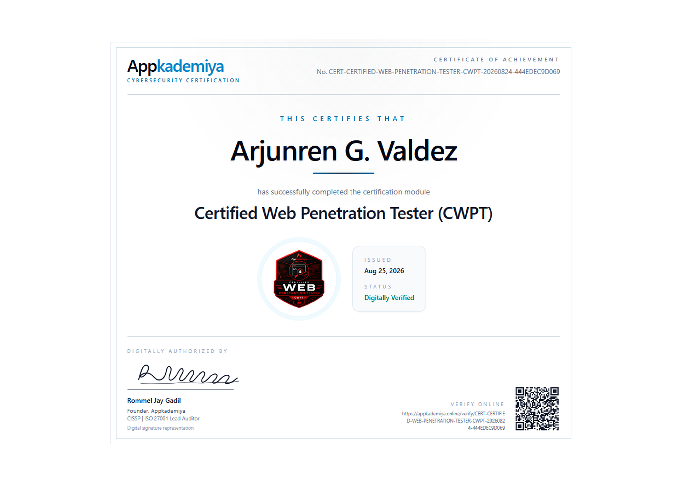
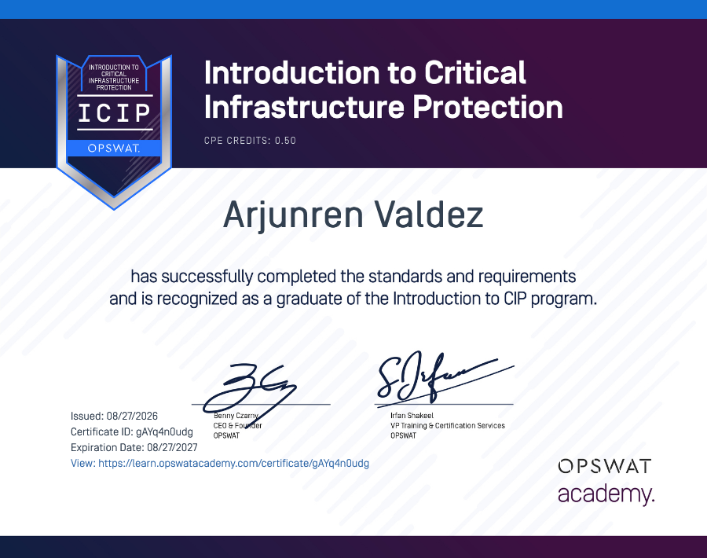

About Me
I am a multi-disciplinary Software Engineer, Network Engineer, and Ethical Hacker specializing in secure, end-to-end solutions. Leveraging modern technologies like Python, JavaScript, and IoT, my work spans a broad technical spectrum—from developing computer vision interfaces and architecting IoT telemetry systems to building hardware-locked security kits that safeguard digital assets.
When I step away from the keyboard, my focus shifts from securing networks to more creative and relaxing pursuits. I spend my downtime catching up on the latest K-dramas, anime, and movies. I am also an avid photographer who loves capturing life's moments—usually with a good cup of matcha in hand.
Skills
Frontend
Cybersecurity & Pentesting
Operating Systems
Virtualization
Developer Tools
Networking
Hardware & IoT
Github Repositories
View AllPostMan
PublicA lightweight, single-file API client with a built-in testing engine, environment variables, and instant code generation. No install required.
Prism_CSS_Toolkit
PublicPrism is a premium, open-source CSS dashboard for modern devs. It features 14+ interactive tools like dynamic Grid/Flex builders, Glassmorphism, Neumorphism, Keyframe Animations, and Google Font in...
ElitePlus
PublicA full-stack media streaming ecosystem featuring a Flask-powered API, a responsive web-based library management dashboard, and a companion Android client. Implements secure user authentication, dyn...
EliteMinus
PublicA full-featured music-streaming web app built with Python (Flask), vanilla JavaScript, HTML, Tailwind CSS, and a MySQL database running on XAMPP...
Jarvis_V1
PublicJARVIS is a Python voice-activated AI assistant that controls a Windows computer through spoken commands. It supports app management, web searches...
WAL_Software_Solution
PublicWAL (Web Application Launcher): A customizable QtWebEngine wrapper converting web apps into standalone Windows .exe files. Includes advanced native features...
Experience
Software Engineer Lead
2025 - PresentBigBoys Automation
Senior Software Developer
2024BigBoys Automation
Junior Software Developer
2024BigBoys Automation
Technical IT Support
2023Datatelcom System Communication
Hello World! 👋
2022Wrote my first line of code in Java
Certificate


Certified Web Penetration Tester (CWPT)
